Step 2: Creating a Template
Previous | Contents | Next
Once we have processed the image, we are now ready to define regions on the template that will allow us to specify what we want each field to be. This process is known as creating a "Template Model". If you know that the batch of documents you intend on processing came from the same consistent printer, then you can use the same module for the
- On the image, right click and add a region. Move this region to the Form ID Field as shown below.
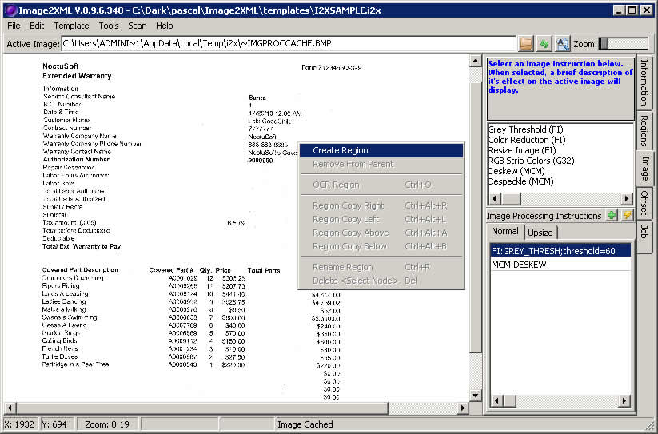
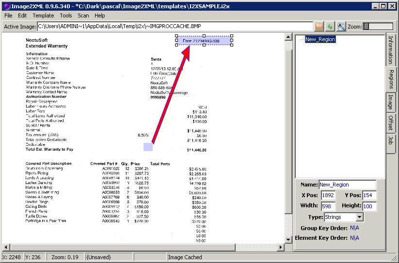
- Right click on this newly created region and name it something meaningful. This region is known as a 'single region' as it will represent in chunk of data. Lets name it form_id.
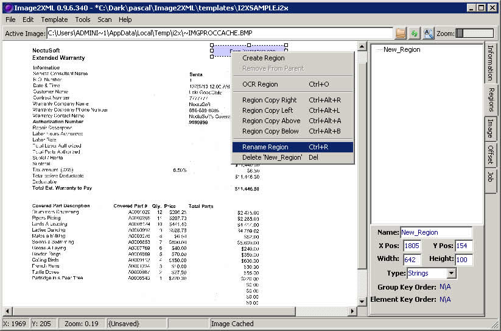
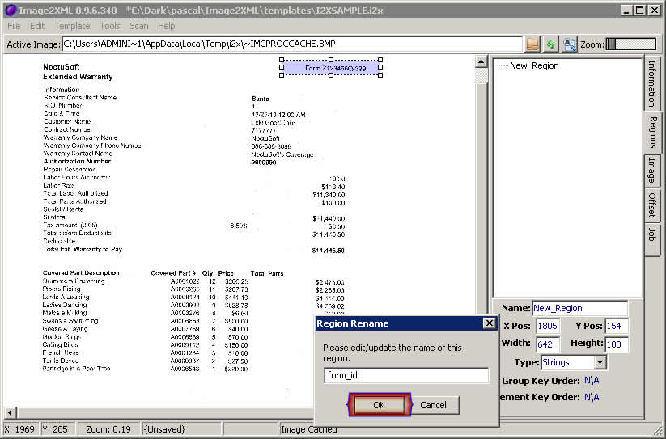
- Right click on this region and select "OCR Region". This will give us what the I2X will thinks the data in the region is.
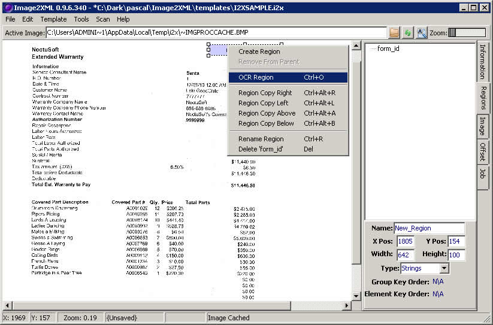
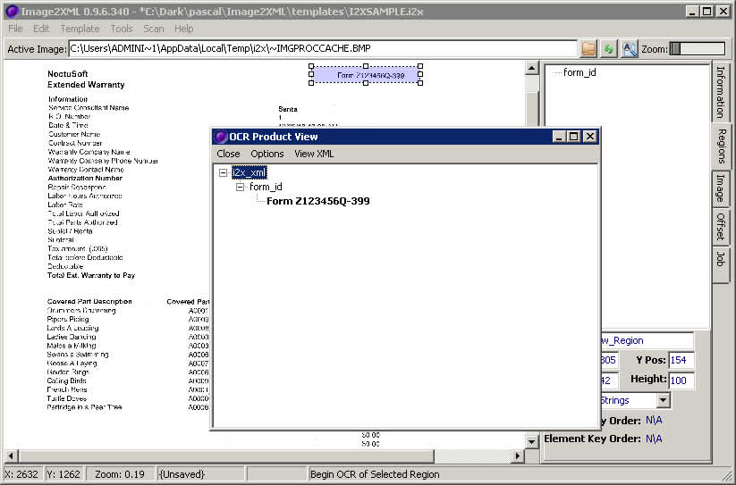
- Create another single region and name it to_pay. Lets make this a number field. Right click on this to see what I2X thinks it is.
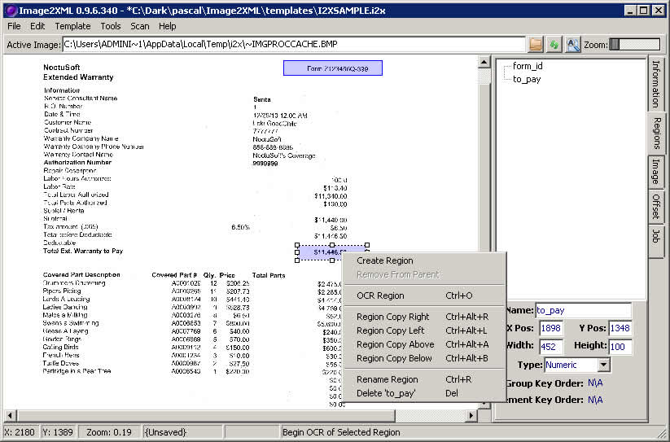
- Now create a region on a chunk of data that we want broken out by different rows and fields. This is especially useful for transactional items such as bank statements or score card lists. Draw one region, and call it part_descr. (since creating a region was detailed above, the final figure representing this step is in Step 8 below)
- Right click on that newly create region and make a copy of it to the right. Resize it so it covers the field.Name this newly created region covered_part.
- Right click again and make another copy to the right, and call it qty. Make this a numeric field.
- Draw a region around the region you created in 5. Call it transactions.
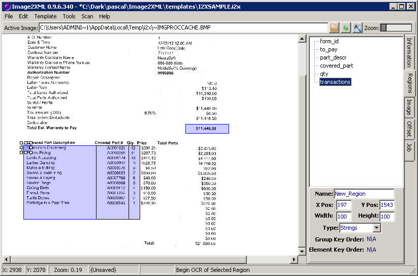
- Next, we are going to make the regions created in 5 and 6 as children of a parent field. Drag the region called part_descr over transactions. When asked to make the dragged field a child of the drag target, click yes.
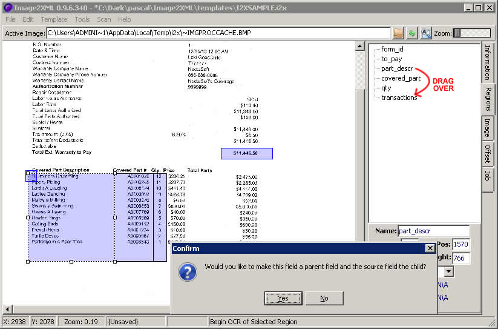
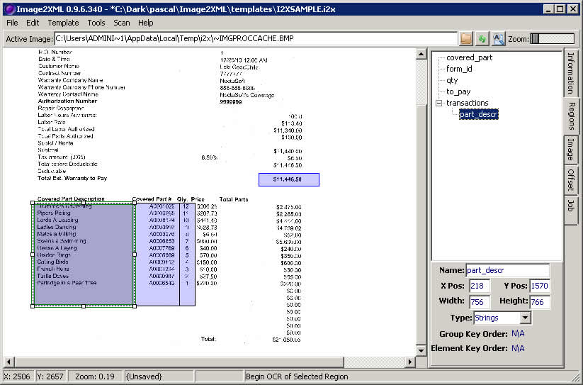
- Drag qty and covered_part over transactions just like in step 9.
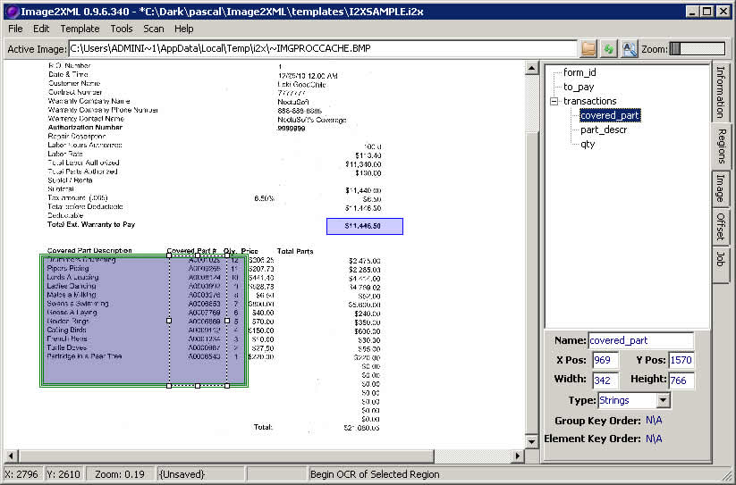
- Right click on an part_descr (it should select the parent region called transactions). Select "OCR Region".
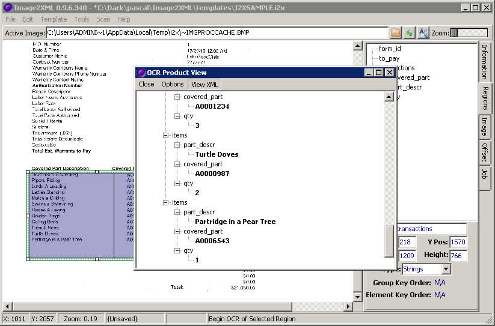
- Press Cntl+S to Save, name it 'I2XSAMPLE'.
- We are now ready to set up a job with this template.
Previous | Contents | Next
Copyright © 2009, NoctuSoft, Inc.
This help file has been generated by the freeware version of HelpNDoc